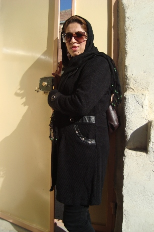

|
|

جور دیگر باید زیست/ مصاحبه با شنو محمدحمید شاعر کرد
گفتگو : پروین ذبیحی
يكشنبه14 آذر 1389
تغییر برای برابری: شنو محمد حمید، زنی شاعر از اهالی کردستان عراق است که به تازگی کتاب شعری از او به زبان کردی چاپ شده است. دراین مصاحبه ، تلاش این شاعر جوان بعد از طلاق برای ادامه زندگی و باور به توانایی هایش در تغییر تغییر وضع موجود یعنی افسردگی بعد از جدایی را از زبان خودش می شنویم.
شنو جان ضمن تبریک به مناسبت چاپ کتابت ممکنه مخنصری از بیو گرافیت تعریف کنی؟
پدر ومادرم اهل سلیمانیه هستند. دو خواهر وبرادر دارم وسه سال بیشتر نداشتم که به ایران کوچ کردیم. پدرم مرد آزاده ای بود وبرای فراراز سربازی در زمان بعثی ها تصمیم به ترک عراق گرفت. دوران بچگیم مثل همه بچه های دور وبرم به سرعت برق وباد گذشت، به مدرسه رفتم و دیپلم گرفتم. از بچگی به نقاشی وشعر خیلی علاقه داشتم وهر کاغذ پاره ایی که گیر میاوردم روش نقاشی می کشیدم.
چرا ادامه تحصیل ندادی ؟
پدرم فوت کرد ودرگیر مشکلات مالی شدیم.
کی ازدواج کردی؟
در بیست وچهار سالگی به روشی سنتی وبدون علاقه وآشنایی قبلی.
از ز ندگی مشترکت بگو
تنها بیست روز از زندگی مشترکمان گذشته بود که اختلافات شروع شد به بهانه ای جزیی سر نحوه انتخاب مدل لباسم که اون میگفت حتما باید لباس محلی بپوشی ومن چندان علاقه ای نداشتم. بعد از مدتی به بهانه های مختلف کتک کاری وتوهین وتحقیر شروع شد. بعد از گذشت یکسال خواستیم از هم جدا شویم که متوجه شدم حامله هستم وتصمیم گرفتم آنرا سقط کنم که همسرم نگذاشت. در زمان بار داری سه بار از خانه بیرونم کرد ومن به خانه پدریم پناه می بردم. بعد از بدنیا آمدن دخترم ودر چهار ماهگیش از خانه بیرونم کرد روی باز گشت به خانه پدریم را نداشتم، پس به خانه فامیل هایم در سلیمانیه رفتم. این جنگ وگریز وقهر کردنها ادامه داشت ودوبار شرعا ونه قانونا طلاقم داد (چون شناسنامه ام ایرانی نبود ازدواجمان ثبت نشده بود واو خیلی راحت از این مسئله سو استفاده می کرد). هربار که جدا می شدیم، برمی گشت و با کلی اظهار پشیمانی احساستم را نسبت به دخترم تحریک می کرد ومن به خانه برمیگ شتم به امید اینکه همه چیز به خوبی وخوشی پیش خواهد رفت وبا تمام مشکلات ونداریهایش می ساختم فقط به خاطر دخترم.
موقع در گیری بیشتر از چه وسیله ایی برای کتک زدن استفاده میکرد ؟
با شلنگ وشلاق ومشت ولگد بارها وبارها سرم را شکست تا اینکه پار سال برای همیشه از هم جدا شدیم.
علت طلاق؟
چون شناسنامه ایرانی نداشتم به راحتی طلاقم داد وهیچ کس هم نپرسید چرا طی این چند سال برایش شناسنامه ایران نگرفتی وچرا ازدواجتان ثبت نشده است. بعد از جدایی و بدون اینکه حق وحقوقم را بدهد دخترم را هم ازم گرفت و چون هیچ مدرک ایرانی نداشتم فورا دیپورتم کردند.
بعد ا ز جدایی وبرگشتن به عراق چکار کردی؟
خوب مدتی سر گردان بودم تا اینکه کاری نیمه وقت پیدا کردم ومشغول به کار شدم.
و بعدا نیز در یک شرکت نیز کار دیگری گرفتم. یادم میاد روز اولی که خانه کوچکی اجاره کردم هیچی نداشتم جز یک ساک دستی. حیران وسرگردان و به شدت نگران از آینده ای مبهم که چه خواهد شد وبه کجا خواهم رسید؟ به شدت افسرده بودم واحساس تنهایی داشت خفه ام میکرد.

طلاق وجدایی چقدر توانست روی شما تاثیر منفی بگذارد ؟
بر خلاف زنان که در ایتگونه مواقع در اوج نا امیدی دست به کارهایی چون فرار از خانه، خودکشی از ترس بیوه گی وعدم پذیرش اجتماع وخانواده می زنند تصمیم گرفتم بغض وکینه ام را تبدیل به یک انرزی مثبت بکنم از استعدادهایم بهره بگیرم وبه عنوان یک زن توانمند خلاقیت هایم را پرورش داده و الگویی از مقابله با مشکلات باشم .
خوب در این راستا چه تلاشی انجام دادی ؟
من همانطور که گفتم به شعر نقاشی وبازیگری علاقه داشتم. قبلا دو نمایشگاه نقاشی برگزار کردم ودر دو نمایش تئاتر هم بازی کرده بودم و گاهی نیز برای دل خودم شعر می گفتم. به تشویق همسر یکی از دوستانم تصمیم به چاپ شعرهایم گرفتم گاهی پشیمان می شدم، اول راه بود وشعرهایم خام. استرس داشتم واز ترس اینکه مبادا به درد چاب نخورد بعد از تاییپ آنها رابه کسی نشان نداده و به چاپخانه ای در اربیل بردم وخوشبختانه بعد از یکسال صبر وانتظار بلاخره به چاپ رسیدند.
چرا اسم جی ژوان را برای کتابت انخاب کردی ؟
جی ژوان اسم دخترم است که مدتهاست او را ندیده ام.
ممنون از وقتی که در اختیارم گذاشتید وچه پیامی برای زنان دارید؟
توصیه من این است که به خودمان بقبولانیم که ما زنان بعد از ترک یک زندگی جهنمی بدون مردان هم می توانیم روی پایمان بایستیم وهم به زندگی آرام وبدون خشونت ادامه بدهیم. من خودم را یک زن شکست خورده ودرهم شکسته نمی دانم ومی گویم باید از نو شروع کرد واین توصیه را به دخترم جی ژوان، زنان و همه کودکان قربانی خشونت دارم.
ودر پایان ضمن گرامی داشت روز جهانی نفی خشونت علیه زنان آرزوی دنیایی برابر وعاری از ستم را برای تمامی انسانها دارم ومعتقدم مردان نیز خود از قربانیان خشونت هستند وباید همدوش زنان علیه این پدیده شوم بستیزند.